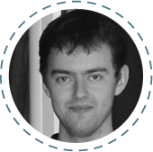
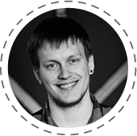
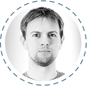
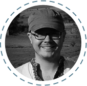
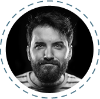
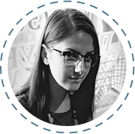
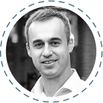
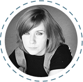

Команда GeekHub
-
Євген Григор’єв Frontend/Backend developer в
Masterofcode
Працює з рядом технологій, включаючи Symfony, Drupal, jQuery, Compass CSS, HAML, etc. Майстерність Євгена стоїть за такими проектами як Belvilla, Yes or No, Jongenvrij webshop, USGA та багато інших. У GeekHub викладає Frontend + CMS.
-
Тимофій Козак СTO at Presentain

Тимофій працює одночасно над декількома проектами - presentain.com, vkorange.com, chedream.org, geekhub.ck.ua". У GeekHub викладає курс iOS.
-
Олег Пасько Керуючий в everlabs

Займається розвитком компанії в цілому та розробкою окремих проектів. На рахунку Олега такі проекти як Ever.travel — сервіс планування подорожей. SeiCrm.com — CRM система страхування. та ряд інших цікавих проектів для різних компаній.
-
Сергій Босовський Android Developer в
Master of Code
Cергій протягом 4х років займається розробкою Android додатків в компанії Master Of Code. У GeekHub Сергій викладає Java for Android.
-
Нік Курат Управляючий партнер в
Master of Code
Нік займається розвитком бізнесу компанії Master of Code LLC та розвитком стартапу presentain.com . У складі Geekhub Нік викладає Project Management та працює над брендінгом та маркетингом проекту.
-
Валентин Ярмолатій Логістичний менеджер в
Master of Code
Валентин займається питаннями технічного забезпечення Geekhub.
-
Олег Зінченко Symfony Expert у KNPLabs

Олег професiйно займаеться розробкою веб додаткiв на PHP з використанням сучасних фреймфоркiв. Адепт Symfony2 та MongoDB. Координатор та викладач напрямку Advanced PHP. Останній проект - Фітнес startup www.exercise.com
-
Tim Phipps English Language Tutor

Since gaining his CELTA teaching qualification, Tim has specialised in private English lessons, meeting a wide range of student needs. At Geekhub Tim leads the Technical English course.
-
Юрій Курат CEO в N3w Normal

Юрій працює із командою розробників веб та кросс-платформових мобільних технологій. Його нещодавні проекти включають у себе stickyalbums.com, chewy.com. У GeekHub Юрій займається організацією та розвитком проекту.
-
Сергій Ключник WEB Developer at
Master of Code
Активний учасник багатьох відкритих проектів, завжди вивчає щось нове зі світу JavaScript. У GeekHub викладає Javascript.
-
Олена Перекопська Project Manager
Master of Code
Олена має значний досвід у сфері контролю якості та управління проектами. У GeekHub викладає Quality Assurance.
-
Володимир Білоус Senior Java Developer at

SPD-UkraineВолодимир є Java та Android розробником у SPD-Ukraine. Його основний проект -- nimblecommerce.com, що є яскравим прикладом реалізації eCommerce SaaS У GeekHub викладає Java for Web.
-
Валерій Олексієнко Веб-розробник в
SPD-Ukraine
Backend та frontend веб-розробник. Основні технології, з якими працює: Spring (MVC, Security), Hibernate, mySql, MongoDB, jQuery, Ext.js Хоббі включають сноуборд, музика, mobile development. У GeekHub Валерій викладає JavaScript.
-
Богдан Халяпін Директор в
SPD-Ukraine
Богдан керує компанією SPD-Ukraine та займається її розвитком. Має більше ніж 10 років досвіду з Java. У складі GeekHub Богдан є викладачем та координатором групи Java for Web.
-
Богдан Данилюк Office Lead at

TransferWiseБогдан один з головних розробників компанії TransferWise. Прихильник швидких, динамічних та надійних рішень у розробці програмного забезпечення. Викладатиме курс улюбленої мови програмування та фреймворку - Groovy & Grails.
-
Павло Надолинський iOS Developer at
MasterOfCodeВін бачив багато і може з радістю цим поділитися. У GeekHub викладає iOS.
-
Дмитро Таряник Android developer в
Master of CodeAndroid розробник, активный учасник GDG Cherkasy. У GeekHub викладає Android. На рахунку Дмитра такі проекти як Heineken Nederland Magazine, LifeChurch Android app. У GeekHub викладає Java for Android.
-
Сергій Гичка Backend and frontend developer в
Master of Code
Сергій займається розробкою веб проектів, використовуючи такі технології як Symfony 1, 2, Zend framework, Drupal, mysql, JS. У GeekHub Сергій викладає Advanced CMS.
-
Юра Батора Lead Java Developer at
SPD-Ukraine
Юра займається розробкою комерційних проектів на Java зі складною клієнт-серверною архітектурою. У GeekHub викладає Java for Web.
-
Сергій Поліщук Backend розробник в
Healthy Code, Inc.
Студент GeekHub у минулому, а зараз - backend девелопер в успішній продуктовій компанії США. Сергій полюбляє складні завдання та прості рішення. У GeekHub викладає Advanced PHP.
-
Владислав Ящук Backend and frontend developer в
Master of Code
Владислав займається розробкою веб проектів, використовуючи такі фреймворки як Symfony 2, Yii; CMS - Joomla, Wordpress, Magento. На GeekHub Владислав викладає курс Advanced CMS.
-
Андрій Береза Senior Java Developer at
SPD-Ukraine
Андрій - сертифікований Java 7 Programmer з великим досвідом реалізації back-end та front-end, у тому числі на проектах створення фінансових систем. У GeekHub викладає Java for Web.
-
Яна Семенова Backend розробник в
Healthy Code, Inc.
Молода і дуже талановита. Протягом всього кількох років змогла побудувати успішну кар’єру в ІТ. У GeekHub викладає Advanced PHP.
-
Олександр Тіняєв Frontend/Wordpress Developer в
N3w Normal
Алекс (або ж Дікс, як його всі кличуть) займається Frontend, AngularJS, Sencha Touch та Wordpress розробкою в N3w Normal LLC вже протягом двох років. У GeekHub викладає Frontend + CMS.
-
Пісковий Дмитро Backend and frontend developer в
Master of Code
Дмитро займається розробкою веб проектів, використовуючи такі технології як Symfony (1, 2) , Zend Framework, Yii, nodeJs, mysql, mongoDB, JS, angular.js. У GeekHub Дмитро викладає Advanced PHP.
-
Fred Cox CTO at eKreative
Fred has been coding for over 10 years, his first mobile app was published before anyone knew what a smartphone was. Now he the techinal lead at eKreative where the focus is on web and mobile apps. Teaches Javascript at GeekHub.
-
Ірина Нікуліна QA engineer at MasterOfCode
Випускниця GeekHub, зараз працює QA інженером у MasterOfCode. У GeekHub викладає Quality Assurance.
-
Вадим Васильєв Senior Java/G&G Developer at
TransferWise
Вадим розробник у компанії TransferWise. У попередньому працював розробником та консультантом у банках різних країн Європи та світу. У GeekHub викладає Groovy & Grails.
-
Сергій Карпенко Senior Java/G&G Developer at
TransferWise
Сергій один з перших розробників у компанії TransferWise. У GeekHub викладає Groovy & Grails.
-
Дмитро Немеш Backend developer at
Mozidev
Дмитро вже багато років розробляє web проекти, має досвід з Yii\Yii2, Symfony2, Spring 3. Є контриб'ютором Yii2 та полюблюяє використовувати нові технології. У GeekHub викладає Advanced PHP.
-
Костянтин Перевозчиков Backend/Frontend developer

Фрілансер. frontend/backend developer веб додатків. Улюблений PHP фреймворк - Yii. Прихильник масимальної автоматизації розробки. У GeekHub викладає Advanced PHP.
-
Альона Лісіцина Head Project Manager в
Master of Code
Альона має науковий ступінь PhD та працює головним проектним менеджером у компанії Master of Code LLC. У Geekhub Альона викладає Project Management.
-
Лавренко Андрій Frontend developer at MasterOfCode

Працює з рядом технологій, включаючи HTML5/CSS3, jQuery, SASS/SCSS/LESS, CoffeeScript, HAML, Twig, Require JS, Titanium SDK. Обожнює "чистий" код. У GeekHub викладає Frontend + CMS.
-
Віктор Євпак Managing Director of eKreative
Loves briniging the best in people, helping them realise their potential as professionals and humans. Has a beautiful wife and two amazing children. He is a lawyer by education, enterprenuer by calling and story-teller by hobby. У GeekHub викладає Business English.
-
Богдан Свиридов Co-founder & Art director at Pixelgrow.co
Богдан має великий досвід у дизайні. Його пристрасть – зручні, прості та зрозумілі речі. У GeekHub Богдан викладає Web & Mobile Design.
-
Таня Ігнатенко Designer at Pixelgrow.co

У Pixel Grow Тетяна займається веб дизайном та дизайном мобільних додатків. Вона приділяє багато уваги невеликим але важливим деталям. Полюбляє лаконічний дизайн та котів :) У GeekHub викладає Web & Mobile Design.
-
Вікторія Однокоз Project Manager at ENKI Games
Вікторія має за плечима декілька випущених ігр у ролі від геймдизайнера до керівника проекту. Зараз у ENKI Games займається розвитком основного продукту компанії. У GeekHub викладає Game Development.
-
Олександр Булла Designer at eKreative
Дизайнер в eKreative. У GeekHub викладає Web & Mobile Design.
-
Козак Ольга Designer at eKreative
Зрозумівши, що не може жити без творчості, Ольга змінила фармацію на графічний дизайн. Ще ніразу про це не пошкодувала. Зараз займається розробкою дизайну для мобільних додатків та сайтів. У GeekHub викладає Web & Mobile Design.
-
Сергій Кусюмов Project Manager at Master of Code
Працює керівником проектів в компанії Master of Code та фін.консультантом стартапу presentain.com. Учасник адміністративної команди GeekHub
-
Елiна Верещак Project Manager at Master of Code
Працює керівником проектів в компанії Master of Code. Учасник адміністративної команди GeekHub
-
Таня Медведенко Project Manager at eKreative

Закінчивши третій сезон GeekHub, вирішила, що хоче робити світ кращим разом з учасниками цієї IT-community:) Працює в адміністративній команді.
-
Негода Анастасія Klatz Startup

Закінчивши третій сезон почала працювати в стартапі Klatz. Учасник адміністративної команди GeekHub.